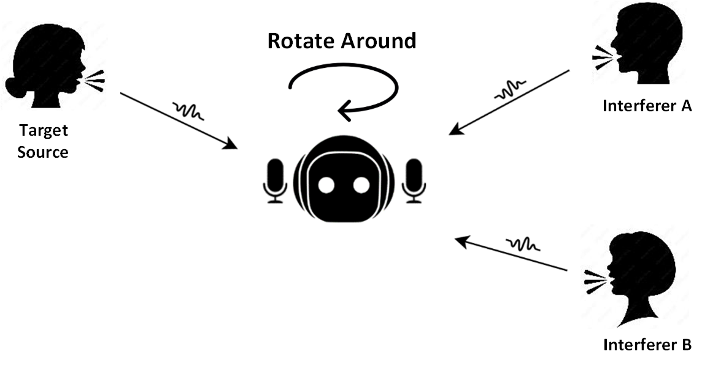
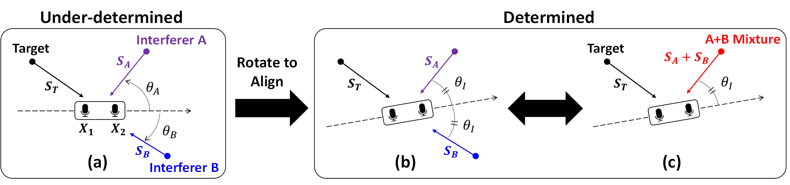
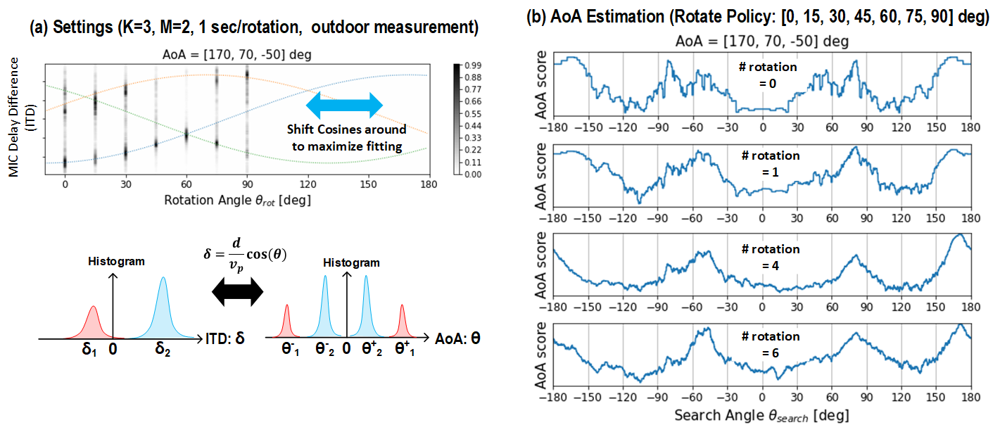
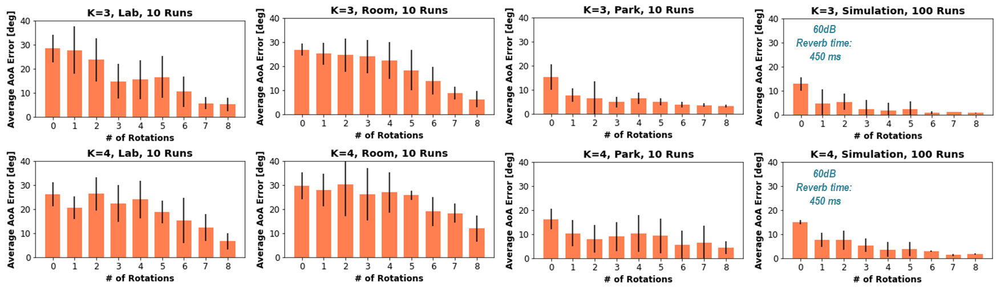
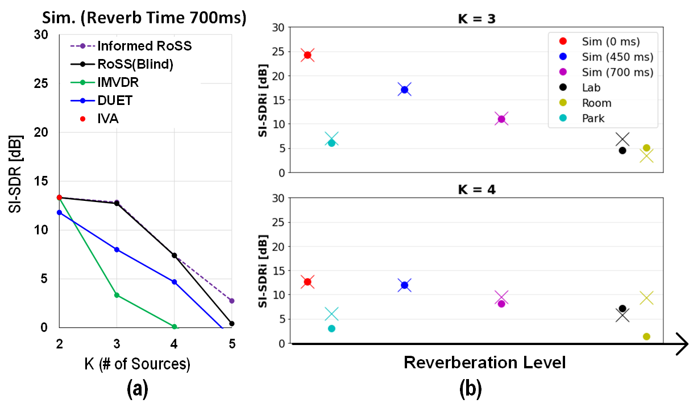
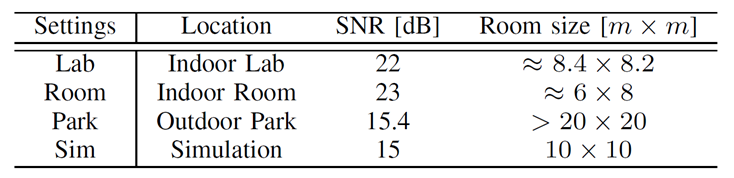

We considers the problem of under-determined audio source separation problem [1] where there are more sources K than microphones M (K > M).
The goal is to isolate a target audio signal (say Alice’s speech) from a mixture of multiple interfering signals (e.g., when many people are talking)
via rotational motion of microphones arrays. (e.g. a swiveling robot-head, rotating robot vacuums)
Note that, under-determined source separation is a challenging problem because mixing process is not linearly invertible
and source signals cannot be obtained by inverting mixting matrix even if we precisely know the mixing matrix.
This is because information is lost in the mixing process [1] that it is difficult to recover the content of any of
the sources only from microphone meausurements.
In our work, we show that rotating 2-microphone array to the optimal orientation can produce desirable “delay aliasing” between two interferers,
causing the two interferers to appear as one. In general, a mixture of K signals becomes a
mixture of (K − 1), a mathematically concrete gain. 
Consider an example scenario in a figure below (a) where there is a pair of microphones at the center, surrounded by 3 indepdendent audio sources Target,
Interference A and B.
Our key idea is to rotate these microphones to align the two interferers to enhance the remaining signals which contain a target signal.
As the microphone rotates, the angle of arrival directions (so called AoA) of each source keep changing.
This means, for any given signal, the relative delay, so called Internaural-Time-Difference(ITD) or Time-difference-of-Arrival(TDOA), between the two microphones
is different for different microphone orientations. Now, at certain microphone orientations, ITD of A and B become the same.
(This point exists for any shape of microphones but for symmetric microphones this happens when
the microphone bisects the two sources A and B)
In fact, this is a form of aliasing in delay since from the microphone’s perspective, the sources A and B look identical in terms of AoA.
Thus, in this orientation, we mathematically have only two chunk of source signals, one is target signal T and the other is mixture of A and B.
Now it becomes 2 source 2 microphone problem where the system is not any more under-determined so that linear the which now became easier problem to solve.
Figure below (b)(c) shows the case of aligning two interferers to bring the system with K=3, M=2 to K=2, M=2 to enhance the target source.

After such rotational alignment, existing blind source separation (BSS) or Under-determined BSS techniques such as ICA(IVA) [2], DUET [3] can be performed
to enhance the target source. Our prposed idea is complementatry, hence comparible, with most source speration algorithms.
What if we don't know the angle-of-arrivals as a prior? Good news is rotational motion itself provides AoA information because ITD and AoA
are in cosine relation. Our proposed algorithm RoSS gathers ITD information of K sources by rotating around initially to track the change of ITD values which should
follow K cosine curves, ideally, if rotation is circular. By fitting the curves, we can identify AoA values of K sources.

As this example result above shows, by fitting cosine curves into sampled ITD histograms, AoA spectrum can be acquired.
And primary peaks of AoA spectrum approache true AoA values as th rotation number goes up. Thus, after initial rotation steps RoSS identifies AoA values first.
Then, based on acquired AoA values, interference alignment can be performed to separate out target signal.
For AoA estimation result, we rotate the 2-microphone array multiple times in various environments and source settings.
As the location gets more reverberant, more rotation steps are needed to have a good AoA estimation accuracy.

Source Separation
Since our proposed idea of aligning interference is complementary to existing UBSS/BSS algorithms,
we compare our results using one of the three popular algorithms below:
(i) Natural gradient-based IVA(independent Vector Analysis) - A variant of wideband ICA [2]
(ii) DUET [3]
(iii) Informed MVDR (Minimum Variance Distortionless Response) Adaptive Beamformer 
As can be seen, RoSS provides source enhancement gain (>5dB of SI-SDR) to all other state-of-the-art UBSS/BSS algorithms.
This can be thought of as "Motion provides additional degree of freedom (DoF) even when K>M" and about 1 DoF is observed
as RoSS with K sources has similar performance with K-1 sources without RoSS.
We show demo results in 4 different settings (See Table below where (b)-Lab, (c)-Park, (d)-Testing, (e)-Room) using a custom-built rotary platform mounted by ReSpeaker Microphone array [5].
For speech sources, we used LibriTTS dataset [4].

Here are video demonstrations for the system in practice. The first set of videos are the indoor demonstrations of AoA estimation
and Source Separation.
3 Source AoA
3 Source Separation
4 Source AoA
4 Source Separation
Here are separated results with audio samples for listening. The "Raw Mixture" is the aggregate of all sounds as recorded by the
microphone before any processing. Each row denote K signals of interest (target source) while each column denotes the type of results containing
ground truth signal to be recovered followed by IVA, DUET, adaptive LCMV(wideband MVDR) beamformer, and RoSS(at alignment angle).
For example, row:S1 and col:Ground is the audio of the ground truth signal 1.
[1] Shoji Makino, Shoko Araki, Stefan Winter, and Hiroshi
Sawada, “Underdetermined blind source separation using
acoustic arrays,” in Handbook on Array Processing
and Sensor Networks. Wiley, 2009.
[2] T. Kim, H. T. Attias, S.-Y. Lee, and T.-W. Lee, “Blind source separation exploiting higher-order frequency dependencies,” IEEE Transactions on Audio, Speech, and Language Processing, vol. 15, no. 1, pp. 70–79, 2007.
[3] O. Yilmaz, S. Richard. Blind Separation of Speech Mixtures via Time-Frequency Masking. In IEEE Transactions on Signal Processing. 2004.
[4] H. Zen, V. Dang, R. Clark, Y. Zhang, R. J. Weiss, Y. Jia, Z. Chen, and Y. Wu, “Libritts: A corpus derived from librispeech for text-tospeech,” arXiv preprint arXiv:1904.02882, 2019.
[5] “Respeaker 6 mic circular array kit for raspberry pi.” [Online]. Available: https://wiki.seeedstudio.com/.